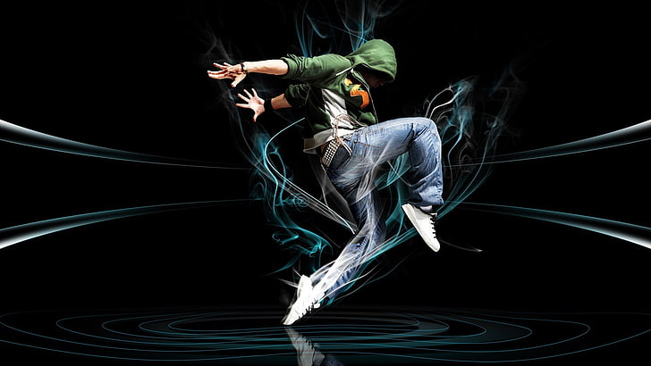

What is Hip-Hop Culture?
Hip-hop is a global cultural movement that began in the streets. It includes rap music, DJing, breakdancing, and graffiti art. It represents creativity, voice, and identity.
Core Elements
The four main elements of hip-hop are MCing (rapping), DJing, breakdancing, and graffiti art. Each plays a role in storytelling and self-expression.
Visual Expression
